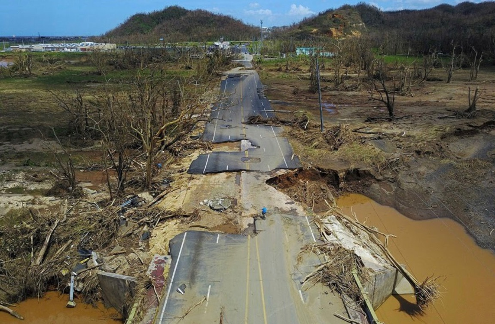
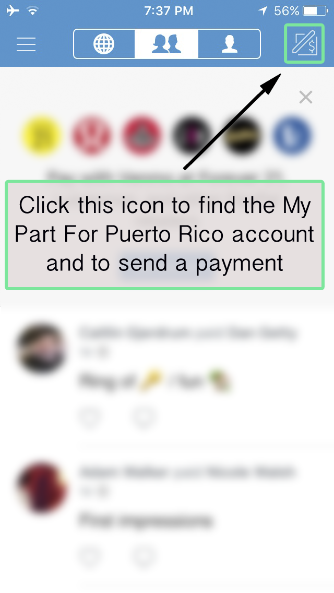
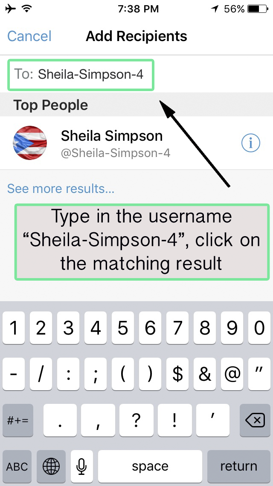
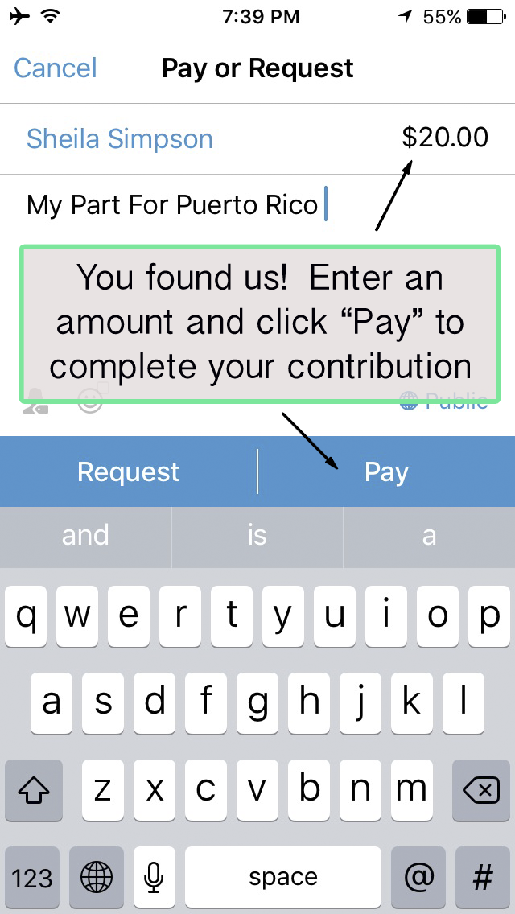
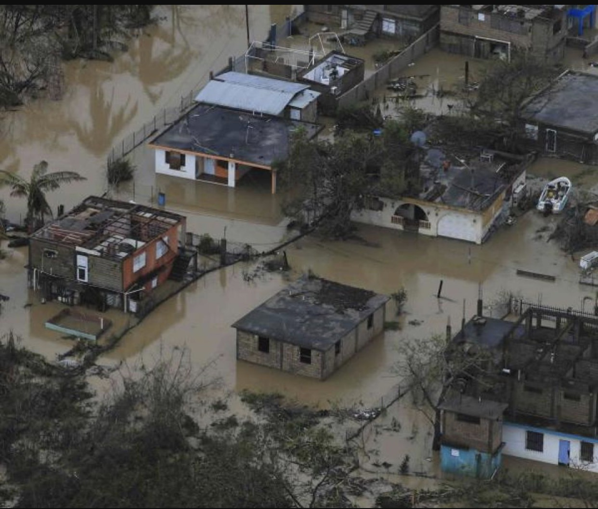

Purpose

Family and friends have asked how they can help Puerto Rico in the aftermath of Hurricane María. We are offering this single-stop site so you can make contributions that will go 100% directly to families in urgent need of basic goods. While federal and insular agencies are doing what they understand is best, political and bureaucratic protocols unintentionally obstruct the timely delivery of the most basic goods, including water and food.
In the wake of the hurricane, Puerto Rico was left without a telecommunication system and many areas with little to no roadway access. Moving about the island in our efforts to ascertain the well-being of our own family members, we have witnessed the devastation that has affected the entire population, in particular the more remote rural and mountainous regions.
Knowing the island and its roads well, we have been successful in putting basic goods directly into the hands of families in this region. We feel fortunate to be in a position to reach some of the most isolated communities on the island and will continue to do so, but with your support we will be able to do so much more.
Objectives
- Collect and use 100% of monetary contributions to purchase basic goods for families in need
- Eliminate the obstruction of bureaucratic protocols that hinder timely delivery of basic goods
- Ensure that your contribution is delivered directly to families and communities most in need
- Facilitate local private citizen initiatives in the identification, acquisition and expeditious delivery of basic goods
With $200 in donations we can make a trip to a needy community. This amount allows us to fill up our vehicle with goods. We cover the related transportation and delivery costs. Contributions of any amount are welcome! It adds up quickly and will allow us to make more deliveries of essential goods to these families!
Why we will collect monetary contributions and not goods:
In the face of urgent needs, sending goods is not an effective or efficient means to contribute to recovery. US Postal Service and other shipment options remain limited and slow. Additionally, shipping fees undermine the cost effectiveness of your contribution. Via this account, all contributions will go 100% to the purchase of basic goods. Should you wish to know more about the specific use of your contribution, please contact us at mypartforpuertorico@gmail.com.
Our target population:
Since Hurricane María made landfall on Puerto Rico on Sept 20, 2017, thousands of people remain housed in emergency shelters. In addition to these families, a substantial part of the population in the more remote areas remain in their homes without roofs, walls or windows. The lack of basic goods, including water and food, has forced many people in these regions of the island to use sources of water that are contaminated.
A general concern over the quality of potable water provided by the Puerto Rico Aqueduct and Sewage Authority (PRASA) continues to grow while cases of leptospirosis are diagnosed daily. As such, there remains an urgent need for potable water. This same urgent need applies to other basic items, such as food, diapers, items of personal hygiene and clothing. We are readily able to purchase and deliver these necessities to some communities of this vulnerable population.
How to Donate
Donate
The easiest methods to get funds to us right now are to send a payment through either PayPal or Venmo to Sheila. Using your own PayPal account, you can make a request to send an amount of your choosing to this email address:
sheilaquito@gmail.com
Please Click Here for instruction on how to pay with PayPal.
Using Venmo, please send your contribution to username Sheila-Simpson-4.
How to find us on Venmo:



Sheila and José can then access those funds in Puerto Rico to buy supplies for distribution. As previously stated, 100% of the money you contribute will go towards disaster relief.
Please click on the "Recent Activity" tab at the top of this page to see your donations in action.

Who We Are
We are José and Sheila and we live in the San Juan metropolitan area. José’s maternal family comes from the central mountainous region of Puerto Rico (Utuado), so we have experienced first-hand the devastation of some of the areas we have mentioned. José is a professor at the University of Puerto Rico and Sheila is a former school administrator from Ecuador and the Galápagos.
Both of us have a long history of work with community-based initiatives and are committed to assuring that your contribution will be shared at the points of greatest need. We would be honored to be the messenger of your solidarity.
With no electricity at home - or practically anywhere on the island - we set up on the floor of a local commercial center to charge equipment and work on the next My Part For Puerto Rico trip.